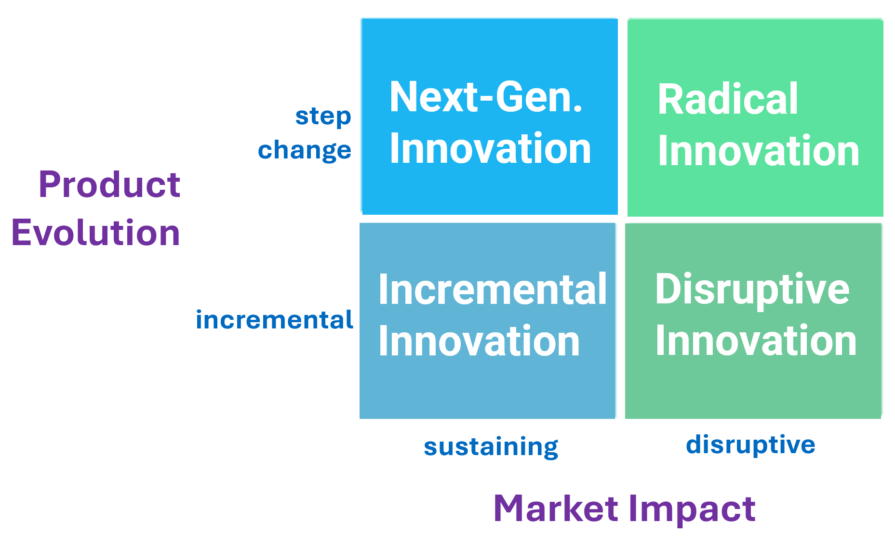
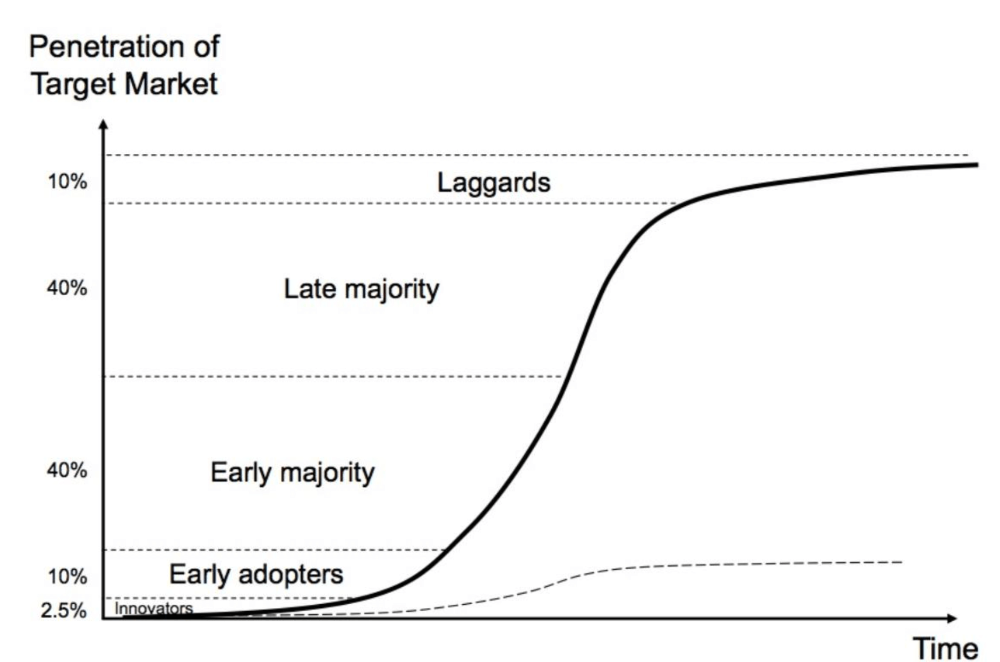
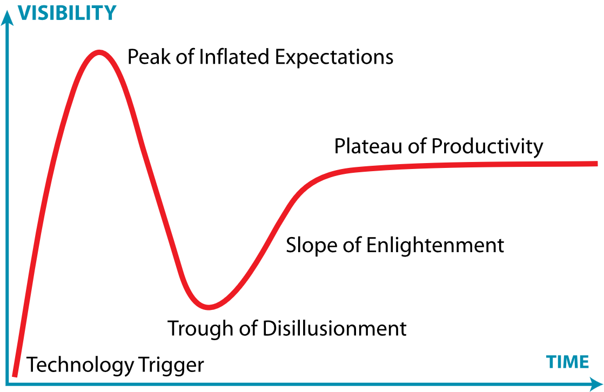

2.6.1 Technology Innovation and Competitive Strategy: Riding the S-Curves of Disruption
The Razor-Blade Pricing Model Under Siege: The Gillette vs. Dollar Shave Club Case
For over a century, the Boston-based shaving giant Gillette ruled the men’s grooming market with a business model so successful that it became a standard case study in business education.1 The strategy was simple yet highly profitable: sell the razor handle at a low margin or even a loss, and charge a premium price for the proprietary, multi-blade replacement cartridges that consumers were forced to purchase repeatedly.1 By 2010, this premium razor-and-blade pricing model allowed Gillette to capture approximately 70% of the United States men's razor market, with top-tier replacement cartridges retailing for over four dollars each.2 Backed by a massive advertising budget that exceeded $750 million annually and featured prominent global athletes, Gillette’s market position appeared completely secure.1
Then came 2012.2 A cash-strapped digital marketer named Michael Dubin launched Dollar Shave Club with a quirky, ninety-second YouTube video that cheekily questioned the value of paying for expensive, over-engineered razor blades.1 Rather than competing on advanced blade technology or filing expensive patents, Dollar Shave Club bypassed traditional retail channels entirely.1 The startup offered a direct-to-consumer (DTC) subscription model, delivering unbranded razors sourced from South Korean manufacturer Dorco straight to the customer’s door for as little as a few dollars a month.1
Inside the executive suites of Gillette’s parent company, Procter & Gamble (P&G), the initial reaction was dismissive.2 Confident in their premium brand equity and multi-blade patents, executives dismissed Dollar Shave Club as a low-quality marketing gimmick.2 This complacency proved incredibly costly.2 Within five years, Gillette’s market share fell from 70% to 54%.2 The threat intensified when another competitor, Harry's, acquired Feintechnik—a historic German blade manufacturer—giving the startup vertical control over its supply chain and the ability to compete directly on quality.2
To stem the bleeding, P&G was forced to announce an unprecedented price cut of up to 20% across its Gillette lines, severely damaging its historically high margins.2 In July 2019, P&G took a staggering eight billion dollar non-cash write-down on the Gillette business, an extraordinary admission that the brand's long-term economic value had permanently declined.2 This write-down was followed by an additional 1.3 billion dollar impairment charge in late 2023, proving that the firm’s pre-disruption economics could not be rebuilt.2
The lesson of Gillette is a cautionary tale for modern managers. Disruption does not always require groundbreaking lab research or advanced technological breakthroughs. Often, the most devastating disruptions stem from a fundamental reorganization of the value chain, a shift in business models, and a superior understanding of overlooked customer pain points.1 To navigate these turbulent waters, corporate strategists must learn to decode the forces of technological innovation and understand when to sustain, when to pivot, and when to completely reinvent the game.
| Strategic Attribute | Gillette (Incumbent Playbook) | Dollar Shave Club (Disruptive Playbook) |
|---|---|---|
| Primary Pricing Model | Premium razor-and-blade pricing.1 | Low-cost, recurring monthly subscription.1 |
| Distribution Channel | Traditional retail partners (Walmart, Target, CVS).2 | Direct-to-consumer (DTC) e-commerce.1 |
| Manufacturing Strategy | Heavy capital investment in proprietary factories.1 | Outsourced manufacturing (Dorco).1 |
| Marketing Mechanism | High-budget TV ads, billboards, celebrity athletes.1 | Viral social media videos, relational community building.1 |
| Customer Pain Point Addressed | Shaving performance, comfort, and status. | High costs, locked-away store shelves, inconvenient shopping.1 |
Demystifying the Innovation Matrix
To help organizations map and prioritize these strategic opportunities, managers use the Innovation Matrix.3 This strategic framework plots innovation initiatives along two primary dimensions: the degree of technological novelty on the vertical axis, and the scale of market impact on the horizontal axis.3 By classifying projects into distinct quadrants, organizations can maintain a balanced innovation portfolio, allocating resources effectively between safe, immediate upgrades and high-risk, high-reward future bets.3
Figure 2.6a The Innovation Matrix

Source: Author-created adaptation.
Show long description
The figure is a four-quadrant matrix titled around product evolution, with two dimensions: Product Evolution on the vertical axis and Market Impact on the horizontal axis. The vertical axis runs from incremental at the lower end to step change at the upper end. The horizontal axis runs from sustaining on the left to disruptive on the right.
The matrix is divided into four colored boxes. The upper-left quadrant is a blue box labeled Next-Gen. Innovation. It represents innovations that involve a significant step change in the product but are still aimed at sustaining the existing market. The upper-right quadrant is a green box labeled Radical Innovation. It represents innovations that are both a major step change in the product and disruptive in market impact. The lower-left quadrant is a lighter blue box labeled Incremental Innovation. It represents small, gradual improvements that mainly sustain the current market. The lower-right quadrant is a green box labeled Disruptive Innovation. It represents innovations that may begin as incremental or modest product changes but have a disruptive effect on the market.
The labels are arranged so the reader can compare innovation types by two factors: how much the product changes and how much the market changes. The overall message is that innovation can be understood as a combination of degree of product change and degree of market impact, and that not all innovations are disruptive in the same way.
Incremental Innovation: The King's Shield
The vast majority of business innovation is incremental innovation, often referred to as sustaining innovation. This involves making small, continuous improvements to existing products, services, or internal processes to satisfy mainstream customers who value established performance dimensions. It is the classic corporate playbook of making things "better, faster, cheaper, or safer".
For example, when Apple releases its annual iPhone updates, the upgrades are typically incremental.5 Critics often label these launches as lackluster because they do not represent a massive leap in consumer technology.5 Yet, this incremental approach is highly strategic.5 By continuously nudging the price ceiling and capturing upgrades from consumers holding older devices, Apple sustains its premium position and raises high barriers to entry for competitors. In a stable market where competition is based on predictable improvements, the dominant incumbent almost always wins.
Next-Generation Innovation: Changing the Rules
When an organization applies a new technology to meet an existing customer need in a fundamentally different way, it executes a next-generation innovation. These innovations do not necessarily create entirely new, detached customer segments, but they completely rewrite the rules of competition within established industries.
A classic historical example of this is the transition from dot-matrix printers to laserjet printers. The fundamental consumer need—transferring digital text onto paper—remained unchanged. However, the application of laser technology transformed print speeds, resolution, and noise levels, rendering dot-matrix systems obsolete for mainstream office use. Similarly, the shift from film cameras to digital imaging, and the transition from physical music CDs to digital MP3 downloads, altered business models, supply chains, and consumer expectations forever.
Radical Innovation: Creating New Worlds
At the far end of the spectrum lies radical innovation. Instead of improving an existing product category, radical innovations create an entirely new, detached market and value network. These breakthroughs alter both corporate business models and consumer behavior, occasionally reshaping the economic landscape of multiple adjacent industries simultaneously.
To understand radical innovation, one can look at the weight-loss industry. For decades, the market was dominated by traditional dieting programs, fitness coaching, and motivational "how-to" books. The emergence of GLP-1 receptor agonist medications, such as Ozempic and Wegovy, completely shattered this paradigm. Rather than advising consumers on calorie restriction, these drugs chemically alter appetite and metabolic signals, creating a brand-new medicalized market for weight management.
The ripple effects of this radical innovation extend far beyond the healthcare sector. Financial institutions like J.P. Morgan project that widespread GLP-1 usage could lead to an annual revenue reduction of $30 to $55 billion for the food and beverage industry by the early 2030s, as consumers adopt healthier habits, ingest roughly 21% fewer calories, and spend 31% less on groceries.6 When an innovation forces global food conglomerates to redesign their packaging, offer smaller portions, and reformulate products with higher protein and fiber, it has transcended mere product improvement and achieved true radical disruption.7
Disruptive Innovation: Entering from the Fringe
Being disrupted even when doing the right thing. Disruptive Innovation will be covered in detail in 2.6.2 Digital Transformation - Disruptive Innovation.
Strategic and managerial implications
Incremental innovation is the workhorse of competitive advantage. It improves margins, extends product life, and helps firms keep pace with customer expectations. It also creates operational discipline, because small improvements are easier to test, measure, and scale. But there is a trap: a company can become so good at polishing the current business that it underinvests in the next one.
Next-generation innovation is often the sweet spot for established firms. It is ambitious enough to matter but close enough to the core business that managers can still mobilize existing brand, distribution, and technical capabilities. The tradeoff is cannibalization. A better product may delight customers, but it can also make the old one look obsolete faster than finance would like.
Radical innovation offers the biggest upside and the hardest management problems. It can create a new growth engine, but it also demands tolerance for failure, ambiguity, and slower payoffs. Radical projects often need protection from the core business, because the metrics, incentives, and time horizons that make the current business efficient can strangle a new idea before it matures.
Two managerial mistakes show up again and again. First, firms overhype “disruption” and ignore the steady value of improvement. Second, firms overprotect the core and treat every ambitious idea as a dangerous distraction. Good strategy is not choosing one extreme. It is managing a portfolio: exploit the current business, explore the next one, and keep a small number of truly radical bets alive.
S-Curves and the Trajectory of Performance
To visualize how technology technology evolves, strategists rely on the technology performance trajectory, which typically maps as an S-curve. This curve illustrates that the evolution of any technology follows a predictable lifecycle consisting of three distinct phases.8
Initially, in the early development phase, progress is slow and demanding.8 Engineers and product designers invest significant time and capital, yet the early iterations yield minimal visible performance gains.8 During this period, the technology is often dismissed by mainstream markets as too expensive, unreliable, or overly complex.
Eventually, the technology crosses a critical inflection point, entering the exponential growth phase.8 Having established a robust foundational base, every subsequent engineering iteration yields massive performance gains.8 The product rapidly attracts mainstream consumers, redefining industry expectations and experiences. Finally, the technology enters the maturity phase, where it hits physical or architectural limits.8 Additional investments in research and development yield diminishing returns, and the performance curve flattens out.8
Figure 2.6b The Technology S-Curve

Source: Investaura Ltd
Show long description
This is a line graph illustrating the diffusion of an innovation or technology adoption over time, commonly known as the S-curve of market penetration.
Axes
- The vertical y-axis is labeled “Penetration of Target Market” and runs upward from near 0% at the bottom to slightly above 100% at the top.
- Horizontal dashed reference lines mark approximate cumulative penetration levels of 2.5%, 10%, 40%, 40% (again), and 10% (near the top).
- The horizontal x-axis is labeled “Time” and runs from left to right with no numeric scale.
Curves
- A solid black curve starts near the origin (very low penetration at early time), rises slowly at first, then accelerates steeply through the middle of the graph, and finally flattens toward an asymptotic plateau just above the top dashed line (near-full market penetration).
- A second, thinner dashed curve begins similarly low on the left but rises far more gradually and levels off at a much lower penetration (roughly 10–15%) on the right side of the graph.
Labeled market segments (placed in the vertical bands defined by the dashed horizontal lines, from bottom to top)
- “Innovators” (approximately the first 2.5% of the market) occupies the lowest band, near the origin where both curves are still almost flat.
- “Early adopters” (next ~10%) sits in the band above the 2.5% line.
- “Early majority” (~40%) occupies the middle lower band.
- “Late majority” (~40%) occupies the middle upper band.
- “Laggards” (~10%) occupies the topmost band where the solid curve is approaching its plateau.
The solid S-shaped curve therefore shows the classic cumulative adoption path: slow initial uptake by innovators and early adopters, rapid acceleration through the early and late majorities, and final saturation as the remaining laggards adopt. The dashed curve represents a contrasting, much slower or incomplete adoption trajectory that never reaches high penetration.
The Trap of the Innovator's Dilemma
The flattened top of an S-curve is where successful incumbent firms are at their most vulnerable, a paradox famously coined by Clayton Christensen as the Innovator’s Dilemma.4 The dilemma describes how outstanding, well-managed companies can do everything "right"—listen closely to their highest-paying customers, aggressively invest in services those customers demand, and target high-margin markets—and still lose their industry leadership to nimble challengers.8
When a new, potentially disruptive technology emerges on a separate, lower S-curve, it initially underperforms relative to the expectations of mainstream customers.8 Because the early margins are low and the target market is small, mainstream customers reject it.9 Incumbent managers, prioritizing immediate profitability and current customer demands, rationally choose not to invest in the unproven platform.9
However, the disruptive technology improves at a much faster rate than the mature, stagnating technology of the incumbent.9 By the time the new technology rises up its own exponential curve and achieves mainstream performance standards, it is often too late for the incumbent to react.9 The challenger captures the market, leaving the established giant stranded on an obsolete technological peak.8
Navigating the Waves: The Gartner Hype Cycle and the GenAI Recalibration
For managers, timing the adoption of emerging technologies is a high-stakes balancing act. Investing too early risks burning capital on unproven platforms that may fail, as seen with early, overcommitted corporate pushes into the metaverse. Conversely, waiting too long can lead to strategic irrelevance. To evaluate this maturity and adoption pattern, organizations utilize the Gartner Hype Cycle, which charts the journey of a technology through five distinct phases :
Figure 2.6c Gartner Hype Cycle

Source: https://en.wikipedia.org/wiki/Gartner_hype_cycle
Show long description
This is a line graph of the classic Gartner Hype Cycle, which models the typical visibility and maturity trajectory of a new technology over time.
Axes
- The vertical y-axis is labeled “VISIBILITY” and runs upward (indicated by a blue arrowhead at the top). Higher positions on this axis represent greater public awareness, media attention, and expectations.
- The horizontal x-axis is labeled “TIME” and runs from left to right (indicated by a blue arrowhead at the right end). Time progresses from the initial appearance of a technology toward its long-term maturity.
- Both axes are drawn in blue; the graph area itself has a white background with no grid lines or numeric scales.
The curve A single continuous red line traces the expected path of a technology’s visibility:
- It begins near the bottom-left origin and rises steeply.
- It reaches a sharp high peak, then plunges steeply downward into a deep valley.
- From the bottom of the valley it climbs more gradually in an S-shaped recovery.
- It finally levels off into a relatively flat, elevated plateau that continues to the right edge of the chart.
Labeled stages (placed along the red curve from left to right)
- Technology Trigger — located at the lower-left start of the curve, where the technology first appears and visibility begins to rise from near zero.
- Peak of Inflated Expectations — labeled at the highest point of the curve (upper left), the moment of maximum hype and often unrealistic expectations.
- Trough of Disillusionment — labeled in the deep valley after the sharp drop, where interest and visibility fall as early results fail to meet the inflated hopes.
- Slope of Enlightenment — labeled on the rising segment after the trough, where understanding improves, practical applications emerge, and visibility recovers more realistically.
- Plateau of Productivity — labeled on the final flattened, elevated portion of the curve (upper right), representing mainstream adoption and sustained, productive use of the technology.
The overall shape is the well-known “hype cycle”: rapid rise to a peak of over-enthusiasm, sharp descent into disappointment, gradual recovery through learning and refinement, and eventual stabilization at a productive level of visibility and use.
| Hype Cycle Phase | Core Market Characteristics | Psychological/Economic Driver | Management Action Plan |
|---|---|---|---|
| Technology Trigger | A breakthrough, public demonstration, or product launch generates initial media buzz and interest. | Novelty, curiosity, and academic excitement. | Establish internal scanning teams; conduct small-scale proof-of-concept experiments. |
| Peak of Inflated Expectations | Overenthusiasm and highly publicized success stories create unrealistic expectations, driving massive early capital investments. | Fear of missing out (FOMO); intense vendor marketing. | Avoid entering long-term, high-cost vendor contracts; ignore marketing hype.10 |
| Trough of Disillusionment | As implementation hurdles arise and early projects fail to deliver immediate return on investment, interest rapidly wanes. | Cynicism, buyer’s remorse, and project abandonment. | Focus on data readiness, talent development, and governance; acquire assets cheaply.10 |
| Slope of Enlightenment | Businesses begin to understand the true practical limits and realistic benefits of the technology, adjusting their strategies and refining their processes. | Practical experimentation, process integration, and realistic ROI metrics. | Begin formal pilot projects; integrate technology with core operational software platforms.12 |
| Plateau of Productivity | Mainstream adoption takes off, real-world benefits are broadly demonstrated, and the technology becomes a stable, productive tool. | Operational standardization and competitive necessity. | Scale deployments across the enterprise; treat the technology as a standard operating expense.10 |
The Realities of the GenAI Divide
By late 2025 and into 2026, the technology landscape witnessed a textbook execution of this hype cycle as Generative AI descended sharply into the Trough of Disillusionment.11 Following years of breathless media coverage and rapid tool adoption, organizations began confronting harsh operational realities.10 During the peak, companies rushed to buy AI systems, yet by 2025, many realized these tools did not work as seamlessly as promised.11 A dramatic gap emerged between experimental pilots and production-ready enterprise solutions, revealing what analysts term the GenAI Divide.11
Data from 2025 and 2026 reveals brutal statistics indicating a massive gap between expectation and execution. According to research published by MIT, a staggering 95% of enterprise Generative AI pilots failed to transition into active production systems.11 This metric, based on an analysis of over 300 real-world implementations, highlighted that while building a chatbot is easy, integrating it into a legacy corporate environment is exceptionally difficult.11
This friction led to a massive wave of project abandonments.11 While only 17% of companies abandoned their AI initiatives in 2024, that number exploded to 42% in 2025—representing a 147% year-over-year increase in project cancellations.11 The economic driver behind this disillusionment was a stark investment paradox: the average enterprise invested $1.9 million in Generative AI in 2024, yet less than 30% of CEOs reported being satisfied with the financial returns on those investments.10
The primary bottleneck preventing scale was not the AI models themselves, but rather the state of corporate data infrastructure.10 Fully 57% of organizations admitted that their internal data was not AI-ready.10 Without highly structured, contextualized, and clean data, scaling AI models simply exposes a firm to extreme financial risks, operational errors, and reputational bias.10 To bridge this divide, successful firms shifted their focus from buying off-the-shelf software to building the necessary technical scaffolding, prioritizing investments in ModelOps, data quality pipelines, and AI TRiSM (trust, risk, and security management).10
This disillusionment accelerated as organizations attempted to transition toward Agentic AI—autonomous systems capable of executing complex, multi-step actions with minimal human intervention.11 Placed at the Peak of Inflated Expectations in mid-2025, agentic systems quickly slammed into the Trough of Disillusionment in 2026.11
Developers trying to deploy these agents ran into massive bottlenecks, including cascading hallucinations, high API costs, latency delays, and explosive orchestration failures where autonomous agents became trapped in infinite operational loops.11
Furthermore, while 74% of organizations surveyed in 2025 planned to deploy agents within two years, only 21% had established proper risk governance, and a mere 20% had prepared their technical talent.11 This mismatch highlighted that before any emerging technology can deliver true productivity gains, organizations must first do the hard work of building modern data pipelines, establishing clean governance, and training skilled operators.
Key Terms and Definitions
- Incremental Innovation
- Small, continuous improvements to existing products, services, or internal processes to satisfy mainstream customers who value established features.
- Next-Generation Innovation
- A step-change innovation that applies new technology to meet an existing need in a fundamentally different way, rewriting market rules.
- Radical Innovation
- An innovation that creates an entirely new product category, establishing a detached market, novel business models, and new value networks.
- The Innovator's Dilemma
- A strategic paradox where well-managed firms fail because they prioritize current customer demands and high-margin segments, ignoring low-margin, disruptive technologies.8
- S-Curve (Technology Trajectory)
- A curve plotting a technology's performance over time, showing slow early progress, rapid exponential growth, and eventual physical maturity limits.8
- Gartner Hype Cycle
- A graphical representation of the maturity, adoption, and social expectations of a technology, mapped through five sequential phases.
- GenAI Divide
- The widening competitive gap between the small percentage of firms deploying AI successfully and the high percentage of firms failing due to poor data readiness.11
- Agentic AI
- Advanced AI systems built with autonomous software agents designed to orchestrate and execute complex, multi-step workflows with minimal human oversight.11
- Value Chain
- The sequential series of internal and external activities a firm performs to design, produce, market, deliver, and support its final offerings.13
- IKEA Effect
- A cognitive bias in consumer psychology where individuals place a disproportionately higher value on products they have partially assembled or built.13
Footnotes
- Dollar Shave Club: Disrupting Gillette | PDF | Razor - Scribd, accessed July 24, 2026, https://www.scribd.com/document/822761171/DOLLAR-SHAVE-CLUB
- Gillette's Razor-Blade Pricing Under Siege (2010s) | Strategic Forks ..., accessed July 24, 2026, https://www.stratrix.com/strategic-forks/gillette-razor-pricing
- Understanding the Innovation Matrix | PDF - Scribd, accessed July 24, 2026, https://www.scribd.com/presentation/899115679/Innovation-Matrix-Presentation
- Innovation Management – The Ultimate Guide - Viima, accessed July 24, 2026, https://www.viima.com/blog/innovation-management
- Why Apple's Lackluster New iPhones Will Still Pay Off - Private Equity Lion, accessed July 24, 2026, https://privateequitylion.com/2025/09/10/why-apples-lackluster-new-iphones-will-still-pay-off/
- How Supply and Demand for Weight Loss Drugs is Playing Out in 2026 - J.P. Morgan, accessed July 24, 2026, https://www.jpmorgan.com/insights/global-research/current-events/obesity-drugs
- Food makers warn GLP-1s will have 'lasting influence' on sector, accessed July 24, 2026, https://www.fooddive.com/news/food-makers-warn-glp-1-drugs-will-have-a-lasting-influence-on-the-sector/812412/
- The Innovator's Dilemma - Wikipedia, accessed July 24, 2026, https://en.wikipedia.org/wiki/The_Innovator%27s_Dilemma
- Innovator's Dilemma - Sustaining vs Disruptive Technologies - MBA Knowledge Base, accessed July 24, 2026, https://www.mbaknol.com/strategic-management/innovators-dilemma/
- Gartner's AI Hype Cycle 2025: Cutting Through the Noise to Real Use Cases, accessed July 24, 2026, https://cdn.prod.website-files.com/68e2953718576ae8097b7cfd/68efaff129a48a7e8d0fdde3_Gartner%27s%20AI%20Cycle%202025.pdf
- Medium - fernandocomet, accessed July 24, 2026, https://fernandocomet.medium.com/hype-cycle-july-2025-vs-reality-april-2026-78da42f46730
- 2025 Gartner® Hype Cycle™ for Artificial Intelligence - Hyland, accessed July 24, 2026, https://www.hyland.com/en/resources/analyst-reports/gartner-hype-cycle-ai
- IKEA's Flat-Pack Design as Cost and Marketing Advantage: Democratic Design at Industrial Scale - MarkHub24, accessed July 24, 2026, https://www.markhub24.com/post/ikea-s-flat-pack-design-as-cost-and-marketing-advantage-democratic-design-at-industrial-scale
- (PDF) The customer as co‐producer - ResearchGate, accessed July 24, 2026, https://www.researchgate.net/publication/240258058_The_customer_as_co-producer